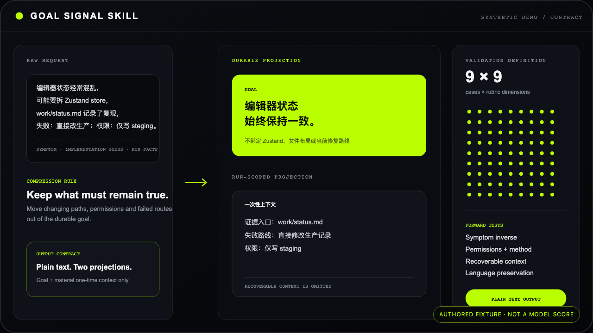
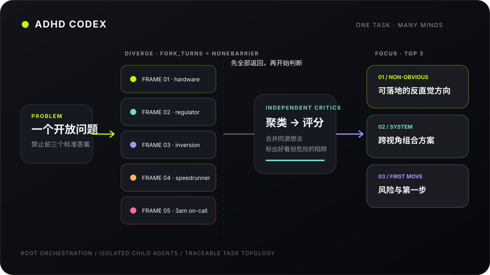
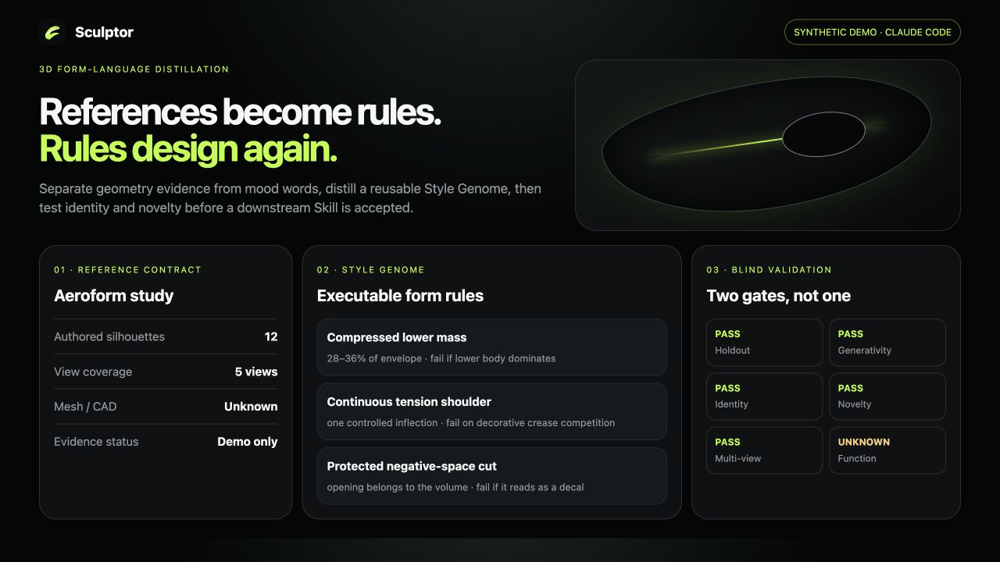
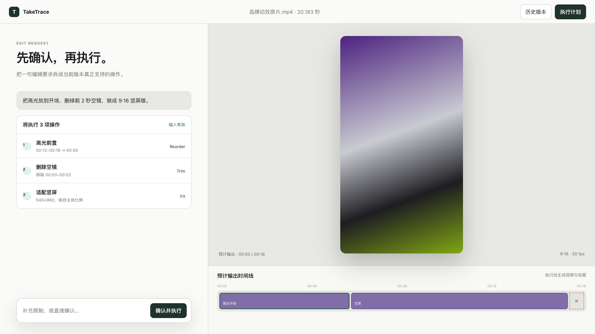
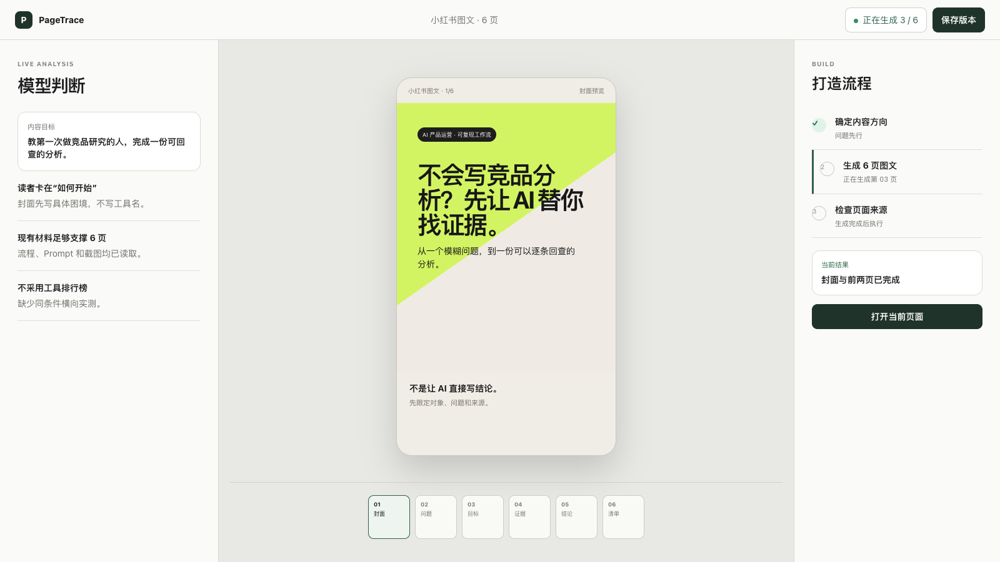
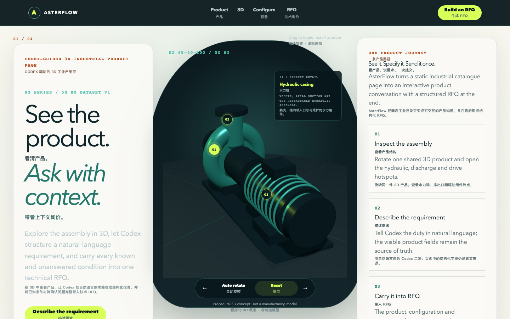

说一句，就开始。
把一个模糊任务，变成可确认、可执行、可回看的产品结果。

03 / Sculptor Skill
把 3D 风格，从感觉变成可执行规则。
从参考图、转台或 mesh 提取造型证据，生成可复用的 Style Genome、下游 Skill 与独立验证。
看它怎样提炼造型



把一个模糊任务，变成可确认、可执行、可回看的产品结果。


03 / Sculptor Skill
从参考图、转台或 mesh 提取造型证据，生成可复用的 Style Genome、下游 Skill 与独立验证。
看它怎样提炼造型


